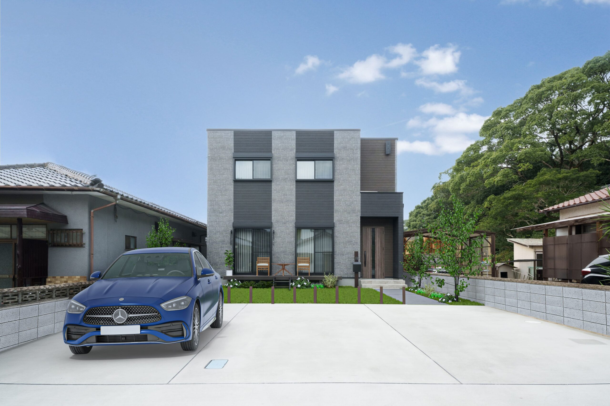
›STYLE 01 FIT HOUSE
フィットハウス
小さめ × ローコスト
必要な部屋数にしぼり、動線をフィットにまとめたプラン。ムダな坪数をおさえながらも、家族がくつろげるLDKはしっかり確保します。
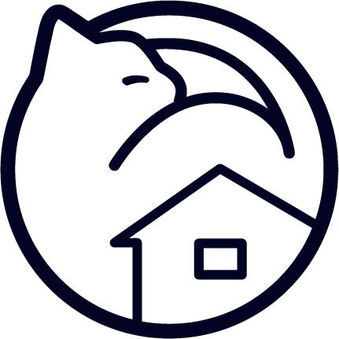
ねこまるホームNEKOMARU HOME来場予約 ›FIT YOUR LIFE
北九州で、ちょうどいいサイズのマイホームを。
OUR CONCEPT 01 /
「手の届くフィットハウス」に、
猫との暮らしやすさをプラスした
北九州発の住宅ブランドです。
ねこまるホームは、フィットな間取りと手の届きやすい価格を軸に、鬼丸ホームと同じ工法・性能で建てる住まいをご提案しています。
「家賃プラス少しの支払いでマイホームを持ちたい」「広すぎないちょうどいい家がほしい」。北九州の暮らしに合わせたプランをご用意しています。
あなたに合う家づくりを ›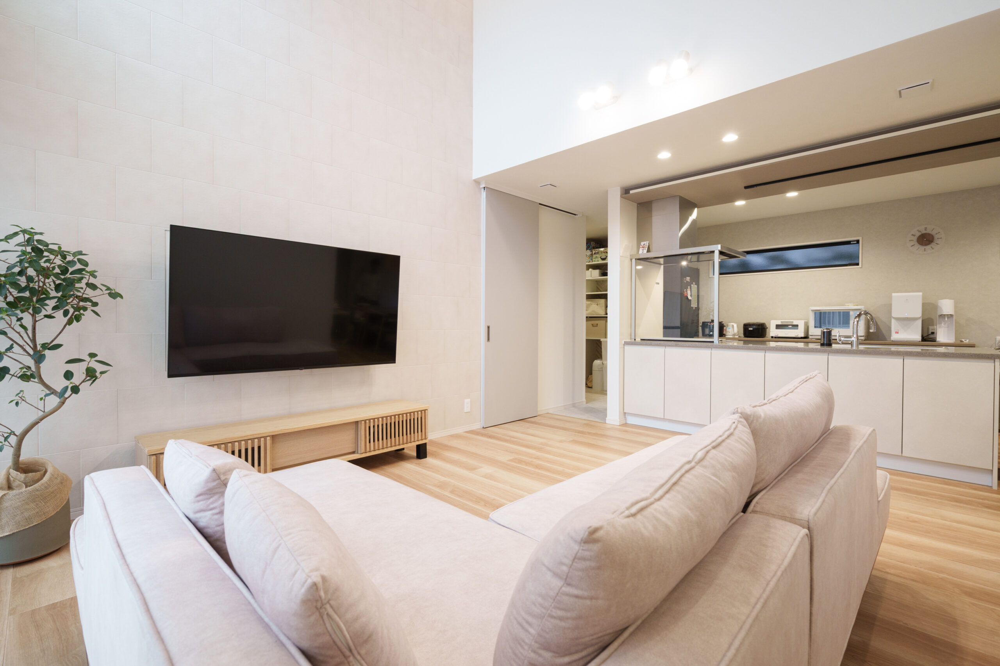
日々を満たす、住まいのかたち。THREE STYLES 02 /
ライフスタイルやご予算にあわせて、
3つの家づくりからお選びいただけます。

›STYLE 01 FIT HOUSE
小さめ × ローコスト
必要な部屋数にしぼり、動線をフィットにまとめたプラン。ムダな坪数をおさえながらも、家族がくつろげるLDKはしっかり確保します。
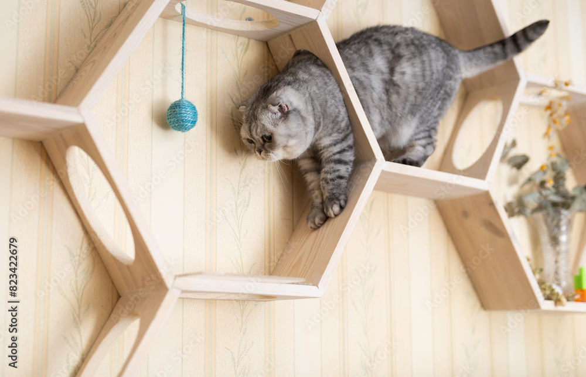
›STYLE 02 WITH CATS
ペット共生設計
キャットウォークや猫トンネル、日向ぼっこができる窓計画など。猫も人も心地よく暮らせる工夫を取り入れたプランです。
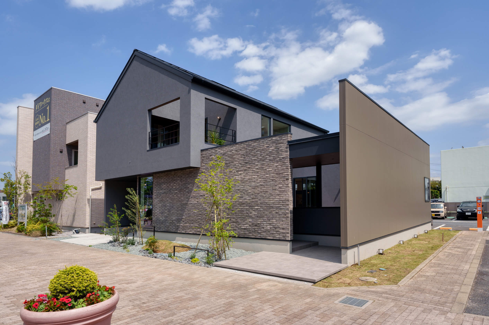
›STYLE 03 EDIT HOUSE
公式タイアップ住宅
ファッション・ライフスタイルブランド「niko and...」が編集する家。家具・小物まで含めた世界観のある空間をご提案します。
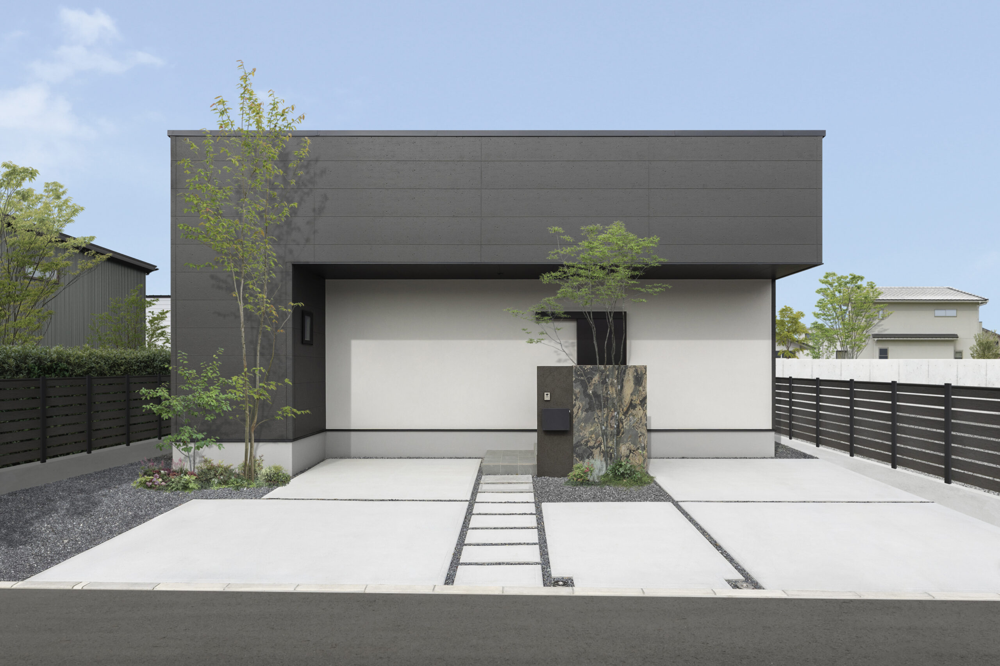
FIT DESIGN, FIT PRICE
フィット設計で、コスパに優れた住まいを実現。
ライフスタイルに合ったデザインやお好みの性能を。
LIFE WITH CATS 03 /
間取りだけでなく「猫目線」の工夫も大切に。
ご希望に応じて、暮らしに取り入れられます。
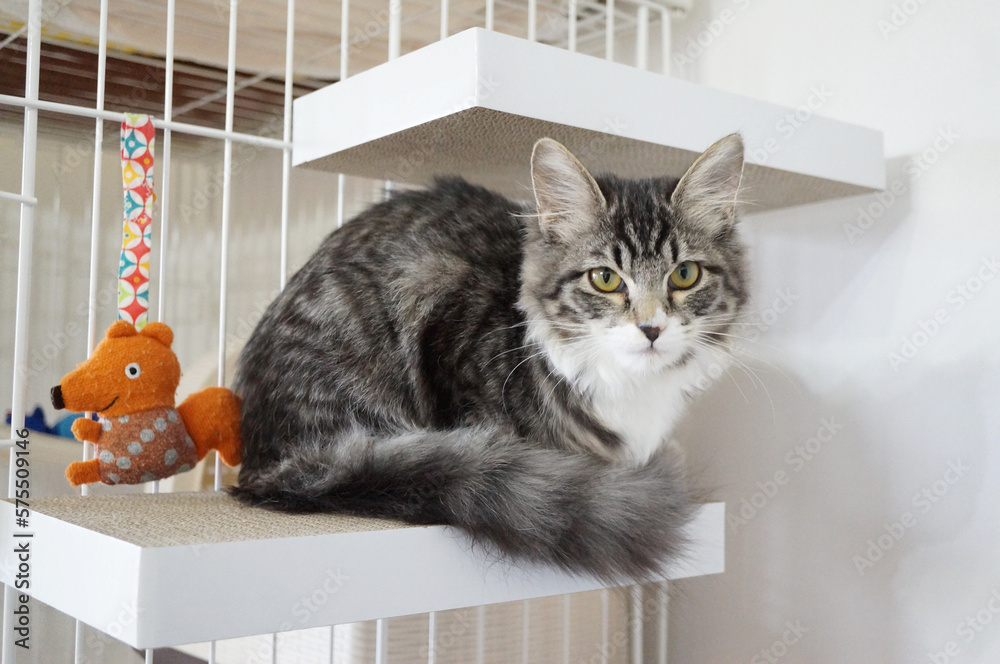
01室内での運動不足を防ぎつつ、家族の気配を感じられる高さ・位置に計画します。
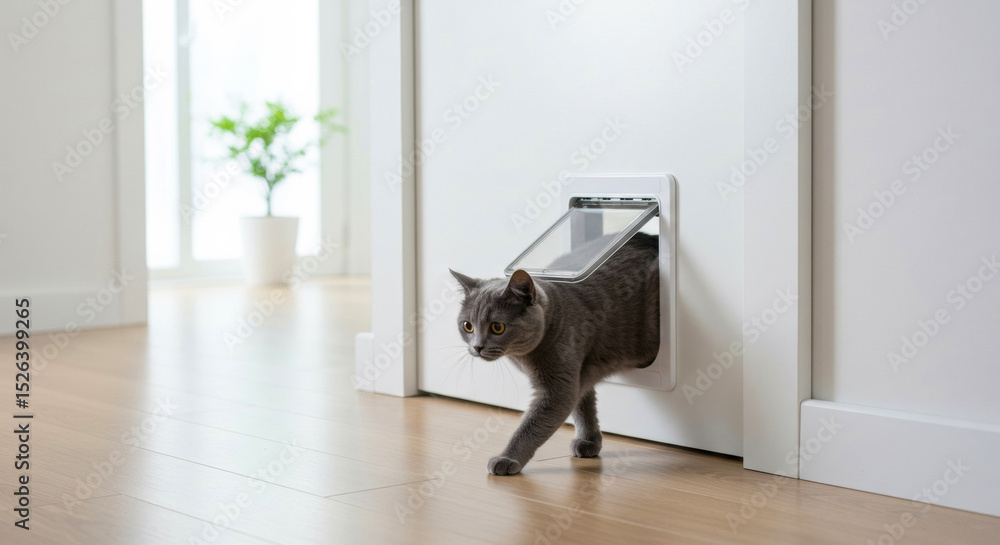
02人のドアを開けっぱなしにせず、猫が自由に行き来できる専用の通り道をつくります。
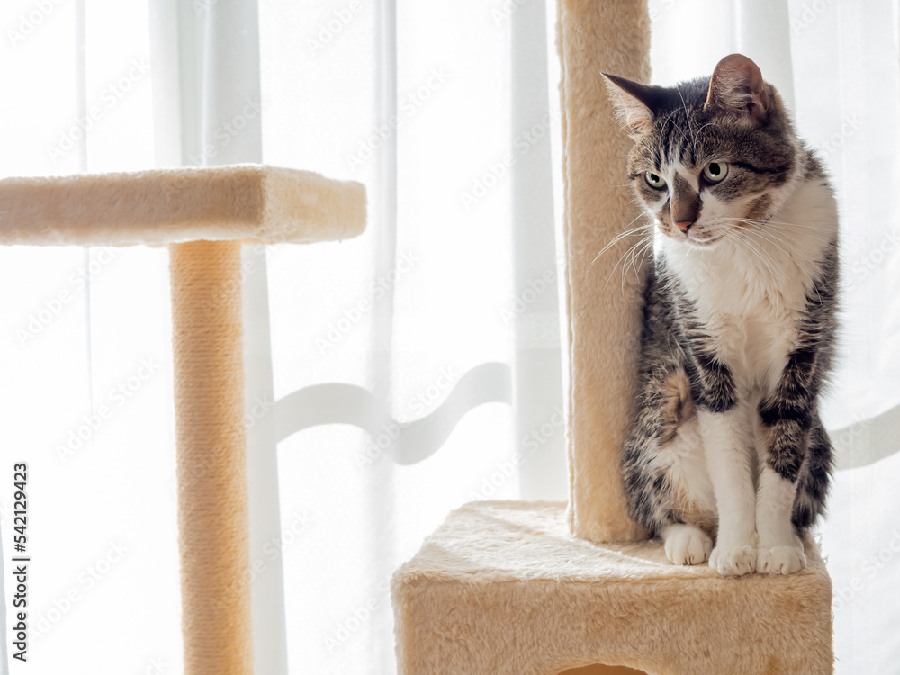
03猫が好む「陽だまり」をつくるため、窓の位置や窓台の高さを一緒に検討します。
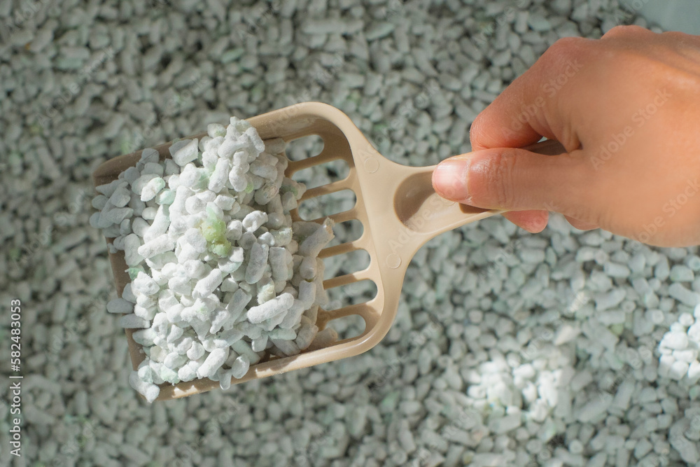
04においや音が気になりにくい位置・換気計画で、家族にも猫にも快適な環境をめざします。
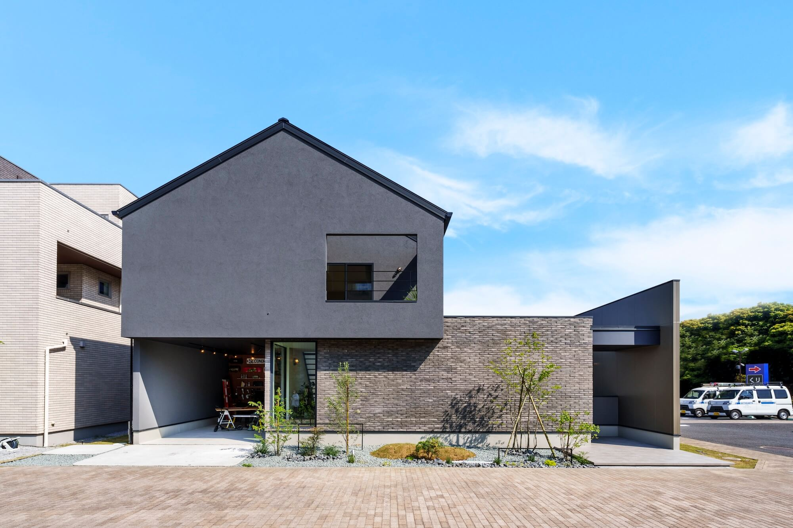
VISIT OUR MODEL HOUSE 04 /
niko and... EDIT HOUSE
モデルハウス in 北九州
実際の広さや雰囲気、猫と暮らす動線などを、
現地でご体感いただけます。
QUALITY & SUPPORT 05 /
地盤調査からアフターまで、
住んでからも長く安心して暮らせる仕様を採用しています。
LET’S FIND YOUR HOME
「ねこと暮らす家ってどんな感じ？」「ローンが不安」など、
どんなことでも遠慮なくお問い合わせください。